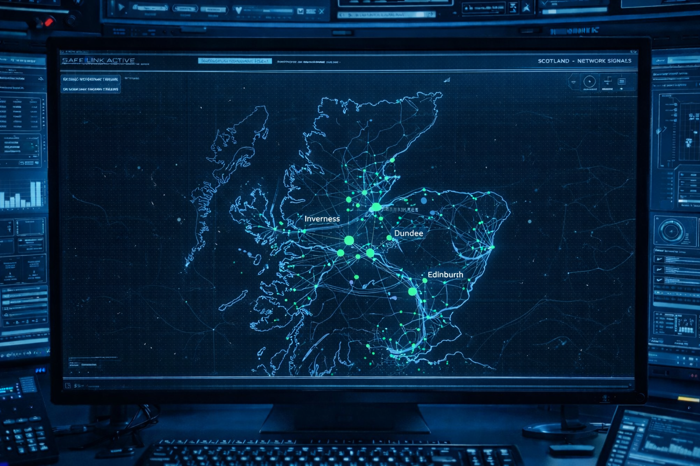

The satellite launch has been successfully stopped… but the system is still active. Intercepted data shows encrypted signals continuing to move through the network. Your task is to analyze the data traffic from different regions. Compare the total traffic with the encrypted traffic and identify which region shows the highest level of suspicious encrypted activity. This will reveal the location of the next V.I.K.I.N.G.S launch site.

View both charts to unlock answers